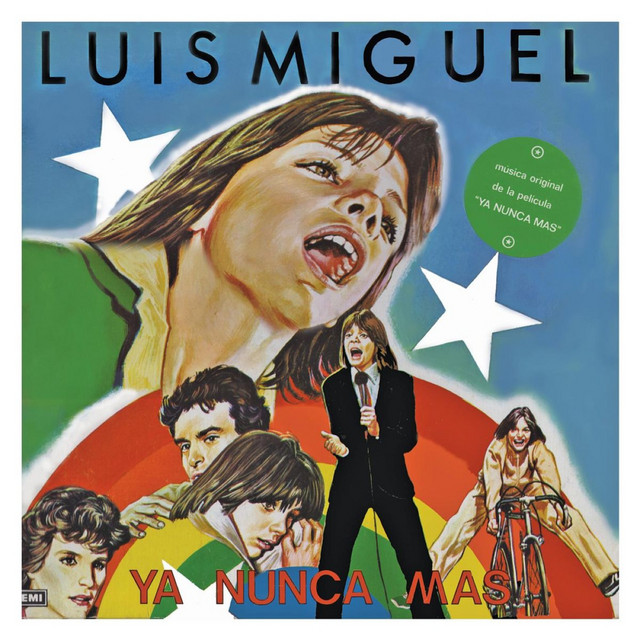

Luis Miguel

| 1 | Labios de Miel 3:56 |
| 2 | Mujer de Fuego 3:31 |
| 3 | Tres Palabras 2:55 |
| 4 | Ella es así 2:47 |
| 5 | No Existen Límites 3:26 |
| 6 | Siento 3:21 |
| 7 | Lo Que Queda De Mí 2:45 |
| 8 | Es Por Ti 3:34 |
| 9 | De Quien Es Usted 2:41 |
| 10 | Tal Vez Me Mientes 2:39 |
12,650,995 oyentes mensuales
| 1 | La fiesta del mariachi 2:43 |
| 2 | No me amenaces 2:28 |
| 3 | Llamarada 3:24 |
| 4 | El balajú 2:49 |
| 5 | Soy lo prohibido 3:04 |
| 6 | El siete mares 2:38 |
| 7 | ¿Por qué te conocí? 3:22 |
| 8 | Deja que salga la luna 3:22 |
| 9 | Serenata huasteca 2:55 |
| 10 | Que te vaya bonito 2:41 |
| 11 | No discutamos 3:22 |
| 12 | Sin sangre en las venas 2:39 |
| 13 | Que bonita es mi tierra 2:53 |
| 14 | Los días felices 3:48 |
| 1 | Labios de Miel 3:56 |
| 2 | Mujer de Fuego 3:31 |
| 3 | Tres Palabras 2:55 |
| 4 | Ella es así 2:47 |
| 5 | No Existen Límites 3:26 |
| 6 | Siento 3:21 |
| 7 | Lo Que Queda De Mí 2:45 |
| 8 | Es Por Ti 3:34 |
| 9 | De Quien Es Usted 2:41 |
| 10 | Tal Vez Me Mientes 2:39 |
| 1 | Alguien como tú - ROCAsound Mix5:56 |
| 2 | Como es posible que a mi lado (Hex Hector mix)4:44 |
| 3 | Si te vas (Rocasound mix)5:09 |
| 4 | Eres (Dario Gomez & Vlad Diaz mix)5:18 |
| 5 | Suave (Dario Gomez & Vlad Diaz mix)5:18 |
| 6 | Será que no me amas (Hex Hector mix)4:41 |
| 7 | Sol, arena y mar (Danny Saber club mix)4:37 |
| 8 | Vuelve (Arena mix)4:13 |
| 9 | Te propongo esta noche (Hex Hector mix)6:13 |
| 10 | Tu imaginación (long remix)7:57 |

| 1 | Te desean4:27 |
| 2 | Dicen 3:20 |
| 3 | Ay, cariño4:20 |
| 4 | De nuevo el paraíso4:27 |
| 5 | Si tú te atreves 3:53 |
| 6 | Amor a mares4:42 |
| 7 | Estrenando amor4:01 |
| 8 | Bravo, amor, bravo5:37 |
| 9 | Tu imaginación 3:55 |
| 10 | Cómplices4:30 |
| 11 | Amor de hecho4:23 |
| 12 | Se amaban4:12 |
| 1 | Santa Claus llegó a la ciudad1:58 |
| 2 | Te deseo muy felices fiestas4:18 |
| 3 | Frente a la chimenea1:57 |
| 4 | Blanca Navidad 3:32 |
| 5 | Navidad, Navidad 2:36 |
| 6 | Estaré en mi casa esta Navidad 2:50 |
| 7 | Mi humilde oración 3:20 |
| 8 | Va a nevar1:54 |
| 9 | Sonríe 3:09 |
| 10 | Llegó la Navidad 2:07 |
| 11 | Noche de paz 3:38 |
| 1 | Ahora te puedes marchar 3:12 |
| 2 | Cuando calienta el sol 3:56 |
| 3 | Fría Como el Viento 3:53 |
| 4 | Un hombre busca una mujer 3:31 |
| 5 | La Incondicional4:23 |
| 6 | Entrégate4:23 |
| 7 | Tengo todo excepto a tí4:32 |
| 8 | Será que no me amas4:06 |
| 9 | Inolvidable4:16 |
| 10 | No sé tú 3:48 |
| 11 | América, América4:35 |
| 12 | Hasta Que Me Olvides4:40 |
| 13 | Suave4:48 |
| 14 | El día que me quieras 3:59 |
| 15 | Somos novios 3:10 |
| 16 | La Media Vuelta 2:41 |
| 17 | Si nos dejan 2:35 |
| 18 | Dame4:55 |
| 19 | Como es posible que a mi lado4:13 |
| 20 | Por debajo de la mesa 3:04 |
| 21 | Amor, Amor, Amor 3:42 |
| 22 | O tú o ninguna 3:17 |
| 23 | Sol, arena y mar 3:19 |
| 24 | Perfidia 3:25 |
| 25 | Te Necesito 3:15 |
| 26 | Vuelve 3:34 |
| 27 | Y 2:42 |
| 28 | La bikina 3:00 |
| 29 | Que Sea Feliz 3:05 |
| 30 | Sabes Una Cosa 3:19 |
| 31 | Misterios Del Amor 3:58 |
| 32 | Si Te Perdiera4:01 |
| 1 | El Viajero 3:38 |
| 2 | Entrega Total 2:14 |
| 3 | Échame a mi la Culpa 3:10 |
| 4 | México en la Piel 3:29 |
| 5 | Cruz de Olvido 3:31 |
| 6 | De qué Manera te Olvido 2:31 |
| 7 | Luz de Luna 2:55 |
| 8 | Motivos 3:32 |
| 9 | Cielo Rojo 2:55 |
| 10 | Paloma Querida 2:45 |
| 11 | Que Seas Feliz 3:06 |
| 12 | Un Mundo Raro 2:41 |
| 13 | Sabes una Cosa 3:20 |
| 1 | Un te amo4:05 |
| 2 | Con tus besos 3:13 |
| 3 | Devuélveme el amor4:06 |
| 4 | Te Necesito 3:15 |
| 5 | Nos hizo falta tiempo 3:45 |
| 6 | Eres4:19 |
| 7 | Ahora que te vas4:02 |
| 8 | Qué tristeza 3:42 |
| 9 | Y sigo 3:30 |
| 10 | Vuelve 3:35 |
| 11 | Qué hacer4:29 |
| 1 | ¿Que Sabes Tu?4:49 |
| 2 | Tu Me Acostumbraste 2:35 |
| 3 | Perfidia 3:26 |
| 4 | Amor, amor, amor 3:42 |
| 5 | Como duele 3:52 |
| 6 | Toda una vida 3:14 |
| 7 | El tiempo que te quede libre 2:26 |
| 8 | Amorcito Corazón 2:51 |
| 9 | La Ultima Noche 3:49 |
| 10 | Volver 3:42 |
| 11 | Al que me siga4:33 |
| 1 | Intro1:44 |
| 2 | Quiero4:08 |
| 3 | Tu solo tu 3:40 |
| 4 | Suave5:38 |
| 5 | Segundo romance popurri10:56 |
| 6 | O tu o ninguna 3:20 |
| 7 | Sol, arena y mar 3:17 |
| 8 | Romances popurri14:49 |
| 9 | Y 2:42 |
| 10 | La Bikina (Live at the Auditorio Coca-Cola/2000) 3:01 |
| 11 | Como es posible que a mi lado4:00 |
| 12 | Te propongo esta noche5:22 |
| 1 | Tu mirada4:09 |
| 2 | Soy yo 3:56 |
| 3 | Sol, Arena Y Mar |
| 4 | O tú o ninguna 3:16 |
| 5 | Quiero4:36 |
| 6 | Dormir contigo4:15 |
| 7 | Dímelo en un beso4:37 |
| 8 | No me fío 3:45 |
| 9 | Te propongo esta noche6:12 |
| 10 | Tú sólo tú4:19 |
| 11 | Ese momento 3:49 |
| 12 | Amarte es un placer |
| 1 | Voy a apagar la luz; Contigo aprendí4:11 |
| 2 | Sabor a Mí3:07 |
| 3 | Por debajo de la mesa3:07 |
| 4 | La gloria eres tú3:26 |
| 5 | Amanecer3:31 |
| 6 | Encadenados3:21 |
| 7 | Bésame mucho5:20 |
| 8 | Contigo4:09 |
| 9 | Noche de ronda4:20 |
| 10 | El reloj3:03 |
| 11 | Júrame3:18 |
| 12 | De quererte así3:14 |
| 13 | Uno4:08 |
| 14 | Mañana de Carnaval3:24 |
| 1 | Si te vas3:35 |
| 2 | Abrázame3:38 |
| 3 | Dame4:58 |
| 4 | Nada es Igual4:25 |
| 5 | Todo por tu Amor3:59 |
| 6 | Que Tú te Vas4:12 |
| 7 | Sintiéndote Lejos4:15 |
| 8 | Como es posible que a mi lado4:16 |
| 9 | Un Día Mas4:07 |
| 10 | Sueña4:16 |
| 1 | Introducción1:10 |
| 2 | Luz Verde3:45 |
| 3 | Pensar en Tí4:32 |
| 4 | Dame Tu Amor4:56 |
| 5 | No Sé Tú3:46 |
| 6 | Alguien Como Tú5:29 |
| 7 | Medley16:32 |
| 8 | Suave5:41 |
| 9 | Introducción Guitarra1:33 |
| 10 | Hasta Que Me Olvides (Live)4:25 |
| 11 | Que Nivel de Mujer4:43 |
| 12 | Historia de un Amor3:52 |
| 13 | Nosotros3:52 |
| 14 | Somos novios3:15 |
| 15 | Sin Ti3:07 |
| 16 | El Día Que Me Quieras3:59 |
| 17 | La Media Vuelta (Live)2:44 |
| 18 | Si Nos Dejan2:32 |
| 19 | Amanecí en tus Brazos2:31 |
| 20 | El Rey2:22 |
| 21 | Será Que No Me Amas4:36 |
| 1 | Rey De Corazones (Il Re Di Cuori)3:15 |
| 2 | Palabra De Honor3:39 |
| 3 | Isabel2:38 |
| 4 | La Chica Del Bikini Azul3:00 |
| 5 | Hablame (Chiamami)2:38 |
| 6 | Mentira2:58 |
| 7 | Fiebre De Amor3:42 |
| 8 | Directo Al Corazon2:49 |
| 9 | No Me Puedes Dejar Asi3:26 |
| 10 | 1+1=2 Enamorados3:26 |
| 11 | Lili (Lili)3:35 |
| 12 | Los Muchachos De Hoy3:40 |
| 1 | El día que me quieras4:00 |
| 2 | Sin ti3:03 |
| 3 | Somos Novios3:11 |
| 4 | La Media Vuelta2:41 |
| 5 | Solamente una vez3:00 |
| 6 | Todo y nada3:39 |
| 7 | Historia de un amor3:52 |
| 8 | Como yo te amé3:35 |
| 9 | Nosotros3:53 |
| 10 | Yo sé que volverás3:37 |
| 11 | Delirio4:33 |

| 1 | Ya nunca más |
| 2 | La juventud |
| 3 | Juego de amigos (instrumental) |
| 4 | Mamá, mamá |
| 5 | Juegos de amigos |
| 6 | La juventud (instrumental) |
| 7 | Ora pronobis |
| 8 | Ya nunca más (instrumental) |
| 1 | Suave4:47 |
| 2 | Me Niego a Estar Solo4:17 |
| 3 | Luz Verde4:59 |
| 4 | Hasta El Fin4:49 |
| 5 | Ayer3:25 |
| 6 | Que Nivel de Mujer4:28 |
| 7 | Pensar En Ti4:15 |
| 8 | Dame Tu Amor4:01 |
| 9 | Hasta Que Me Olvides4:40 |
| 10 | Tu y Yo4:50 |

| 1 | No me platiques más3:32 |
| 2 | Inolvidable4:17 |
| 3 | La puerta3:19 |
| 4 | La barca3:29 |
| 5 | Te Extraño4:24 |
| 6 | Usted |
| 7 | Contigo en la distancia3:24 |
| 8 | Mucho Corazón3:24 |
| 9 | La Mentira3:46 |
| 10 | Cuando vuelva a tu lado3:49 |
| 11 | No sé tú3:48 |
| 12 | Cómo3:15 |
| 1 | Entrégate4:24 |
| 2 | Oro de ley3:59 |
| 3 | Tengo todo excepto a ti4:33 |
| 4 | Será que no me amas4:07 |
| 5 | Amante del amor3:22 |
| 6 | Hoy el aire huele a ti3:45 |
| 7 | Cuestión de piel4:25 |
| 8 | Más allá de todo4:05 |
| 9 | Alguien como tú4:19 |
| 10 | Más3:11 |
| 1 | Fría Como el Viento3:53 |
| 2 | Esa Niña4:07 |
| 3 | Culpable o no3:57 |
| 4 | Un hombre busca una mujer |
| 5 | La incondicional4:27 |
| 6 | Separados3:37 |
| 7 | Por Favor Señora4:00 |
| 8 | Pupilas de Gato3:57 |
| 9 | El Primero3:14 |
| 10 | Soy un Perdedor4:11 |
| 1 | Es Mejor3:53 |
| 2 | Sin Hablar4:30 |
| 3 | Ahora Te Puedes Marchar3:16 |
| 4 | Yo que no Vivo Sin Ti3:31 |
| 5 | Eres Tú4:11 |
| 6 | Sólo Tú3:20 |
| 7 | No me Puedo Escapar de Ti3:31 |
| 8 | Cuando Calienta el Sol3:58 |
| 9 | Soy Como Quiero Ser2:56 |
| 10 | Perdóname3:32 |
| 11 | Sunny3:49 |
| 1 | Black Is Black / King Creole / Twist And Shout / Jailhouse Rock (Medley)4:18 |
| 2 | Baby I Don't Care / Treat Me Nice / It's Now Or Never (Medley)4:15 |
| 3 | C'Mon Everybody / Dynamite / Boney Moronie / High Class Baby (Medley)4:22 |
| 4 | Hound Dog / Don't Be Cruel / Teddy Bear / All Shook Up (Medley)3:26 |
| 5 | Tallahassee Lassie / High School Confidential / Good Rockin' Tonight (Medley)3:03 |
| 6 | Susie Q / Memphis Tennessee / Rock And Roll Music (Medley)2:51 |
| 7 | Rock Around The Clock / Rip It Up / When The Saints Go Marchin' In / See You Later Alligator / Lucille (Medley)4:10 |
| 1 | Tu no tienes corazón2:44 |
| 2 | Un rock & roll sonó2:23 |
| 3 | La chica del bikini azul2:58 |
| 4 | Lili3:33 |
| 5 | Palabra de honor3:36 |
| 6 | Rey de corazones3:18 |
| 7 | Me muero por ti2:13 |
| 8 | Isabel2:35 |
| 9 | Me gustas tal como eres3:11 |
| 10 | Muñeca rota3:17 |
| 11 | Háblame2:37 |